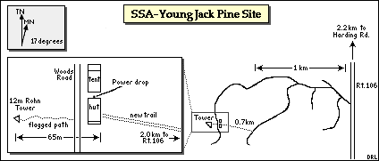
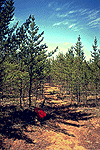
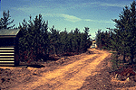
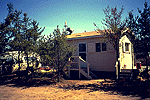
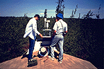
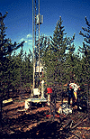
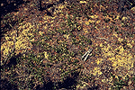

Location of the SSA within Canada. |
 Location of the Young Jack Pine site within the SSA. |
|  Map of the Southern Study Area Young Jack Pine site. | |
| SSA Young Jack Pine Flux Tower also called SSA-YJP-FLXTR (click here for detailed info) |
||
| Latitude: 53.87581 | UTM Easting: 523320.2 | BOREAS X: 416.988 |
| Longitude: -104.64529 | UTM Northing: 5969762.5 | BOREAS Y: 339.008 |
| Elevation (ASL): 533.54 m | UTM Zone: 13 | |
|  Beginning of the "flagged path" to the tower, from the road |  The "new trail" to the YJP site, looking towards the site |
|  The hut and tent |  Sun Photometer on top of hut (with RSS-11) |
|  Base of YJP flux tower |  Young jack pine trees |
|  Ground cover at the YJP site | |
Related Pages:
 BOREAS Home
BOREAS Home
 Study Region Overview
Study Region Overview
 Southern Study Area (SSA)
Southern Study Area (SSA)
 SSA Young Jack Pine Site (SSA-YJP)
SSA Young Jack Pine Site (SSA-YJP)
 NSA Young Jack Pine Site (NSA-YJP)
NSA Young Jack Pine Site (NSA-YJP)
Revison Date: January 25, 1999
{kind=link}
{kind=link}
{kind=link}
{kind=link}
{kind=link}
{kind=link}